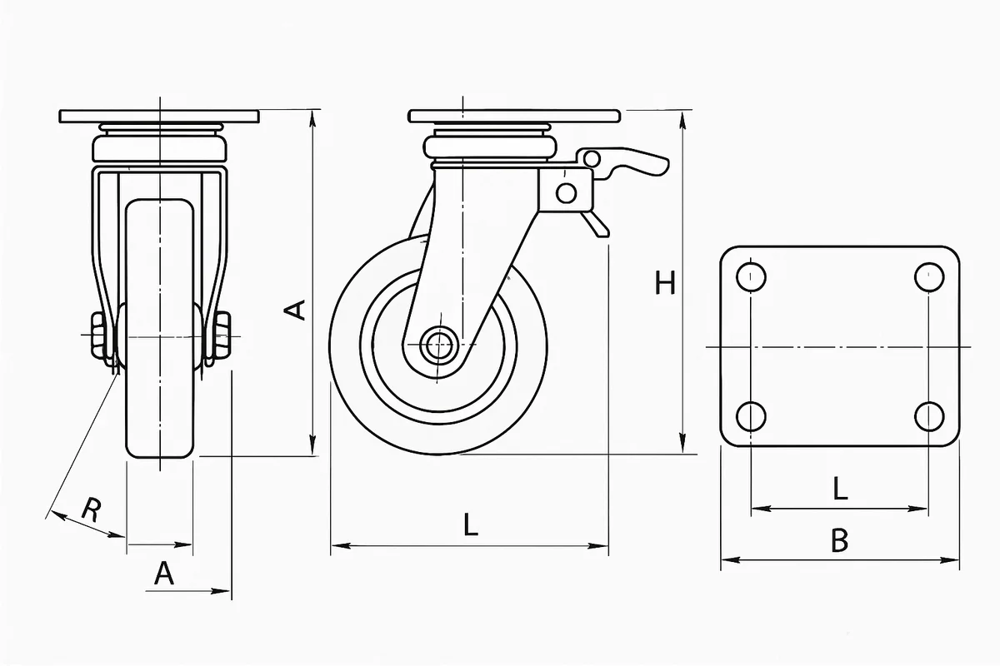

어떤 도면을 어떻게 올리나요
아래 내용은 Part 1(단일 도면 회전체) 기준입니다. 여러 투상도가 한 장에 있는 도면은 Part 2 에서 뷰를 나눠 부품 단위로 만듭니다.
이 데모는 선반에서 깎는 회전체 한 부품(축·부시·핀·롤러·스페이서·플랜지·슬리브·볼트/나사류)의 정면도 한 장을 읽어 치수 사양으로 옮깁니다. 조립체·판금·하우징이나 여러 부품이 한 장에 있는 도면은 읽지 못합니다.
1. 되는 도면 · 안 되는 도면
아래 삽화는 종류를 보여 주기 위해 이미지 모델이 그린 것이라 숫자·기호는 실제 도면과 다를 수 있습니다. 치수 기준은 2절의 실제 도면을 보세요.





2. 치수는 어디를 기준으로 읽나
아래는 정답 사양에서 그린 실제 도면(단붙이 축)입니다. 번호가 읽어 들이는 항목이며, 올리는 도면도 같은 관례를 따르면 정확도가 가장 높습니다.

3. 파일 · 해상도 체크리스트
- 한 장에 한 부품, 정면도(축이 가로로 긴 뷰). 키홈 단면 A-A·육각 단면은 옆에 있어도 됩니다.
- PNG 또는 SVG 를 우선하고, JPEG 은 화질 90 이상. 부품 가로 폭 1,000px 이상(권장 1,500px+). 흐리거나 기울어진 사진은 반듯하게 잘라서.
- 외형선은 굵게(0.5mm), 치수선·보조선·중심선은 가늘게(0.18~0.25mm). 이 굵기 차이로 부품 외형을 가려냅니다.
- 단위 mm. 인치 도면(.19 같은 표기)은 AI 판독이 ×25.4 로 환산합니다.
- 표제란의 품명·재질·도번은 그대로 옮겨집니다(있으면).
4. 판독은 어떻게 이루어지나 (OCR 에 대해)
| 모드 | 형상(비율) | 치수 문자 | 결과 |
|---|---|---|---|
| 체험 모드 | 브라우저가 외형선만 남겨 부품 외형을 재고 구간으로 나눕니다. | 읽지 않습니다. | 비율은 정확하고, 실제 치수는 "전체 길이" 입력 하나로 정합니다. |
| 서버 모드 | 같은 외형 측정을 힌트로 보냅니다. | AI 가 치수 문자를 읽어 근거로 남기고, 사양과 대조해 안 맞으면 스스로 한 번 고칩니다. | 정답 17종 기준 구간 일치 100%, 치수 일치 98%. |
문자 인식(OCR)에 해당하는 일은 서버 모드에서 의미 해석과 함께 이루어집니다. 체험 모드에 브라우저 문자 인식을 붙이면 전체 길이 입력 없이도 실제 치수를 얻을 수 있습니다.
5. 표현할 수 있는 형상
| 구분 | 지원 | 미지원(다음 버전) |
|---|---|---|
| 외형 | 원통·테이퍼·수나사 세그먼트, 모따기 C, 필렛/라운드 R, 도피홈(DIN 76/509), 환형 홈(멈춤링·오링) | 곡면(구면·원호) 프로파일, 스플라인, 편심 |
| 내경 | 관통/막힌 보어(단붙이), 입구 모따기, 센터구멍(DIN 332), 육각 소켓 | 내부 홈, 암나사 형상(호칭만 기록) |
| 비축대칭 | 키홈(DIN 6885), 평면(D컷·양면), 육각, 횡구멍(관통/막힘), 널링(표기) | 볼트 원 위 축방향 구멍(플랜지), 방사 슬롯, 나사 형상(장식 표현) |
6. 내려받기 형식
| 형식 | 어디서 | 내용 |
|---|---|---|
| STEP | 정밀 곡면 · 샘플은 미리 생성 | 원통·원추·평면으로 이루어진 곡면 모델. 기계 CAD 에서 그대로 편집됩니다. |
| STEP · 면 | 이 브라우저 | 삼각형 면으로 만든 STEP. 편집한 사양도 바로 받을 수 있습니다. |
| OpenUSD | usda · usdz | 메시와 치수 사양 값을 함께 담습니다(단위 m 환산 포함). |
| GLB · OBJ · STL · PLY | 이 브라우저 | mm 단위 메시. STL 은 프린팅용 바이너리. |
| FBX | 이 브라우저 | Maya·3ds Max·Unity·Unreal 에서 열립니다. Blender 에서는 GLB 를 쓰세요. |
| DXF · SVG | 이 브라우저 | 사양으로 다시 그린 제작 도면(레이어·치수 포함). |
| JSON | 이 브라우저 | 치수 사양 자체. |
7. 조립 · 시뮬레이션은 무엇을 읽나
도면의 규격 표기가 곧 결합부입니다. 화면 위 조립 · 시뮬 버튼을 켜면 아래를 AI 없이 규칙으로 읽어 상대 부품을 만들고 분해·조립·회전을 보여 줍니다. 끄면 부품만 남습니다.
| 도면 표기 | 읽는 것 | 운동 |
|---|---|---|
| 공차 h6/j6/k6 + "베어링 자리" | 구름 베어링 내륜 | 축방향으로 뽑음 · 내륜만 축과 함께 회전 |
| 홈 ⌀×폭 (DIN 471) | 축용 멈춤링 | 반경 방향으로 벌려 빼냄 |
| 키홈 b×t1 (DIN 6885) | 평행키 + 허브 | 허브는 축방향, 키는 반경 방향 |
| 나사 M호칭×피치 | 너트(자유단일 때) | 1회전 = 피치만큼 전진 (실측 일치) |
| 횡구멍 ⌀ 관통 | 분할핀·평행핀 | 반경 방향 |
| 육각 대변 · 육각 소켓 · 평면 | 스패너 · 육각 렌치 | 물고 돌림 |
| 보어 H7 · 외경 m6 · 테이퍼 | 상대 축 · 하우징 · 테이퍼 허브 | 축방향 삽입/압입 |
8. 판독 결과를 고치면
오른쪽 세그먼트 표와 JSON 에서 값을 고치면 3D 와 다시 그린 도면과 검증이 동시에 다시 계산됩니다. 올린 도면 이미지 자체는 바뀌지 않고, 그 위에 판독 외형선이 겹쳐 보이며 "재생성 도면" 으로 지금 사양에서 다시 그린 도면을 볼 수 있습니다. 반대 방향(이미지에서 사양)은 판독 단계에서만 일어나고, 그 정밀도가 검증 패널의 외형 일치와 치수 일치로 표시됩니다.
9. Part 2 · 다시점 도면에서 부품 하나
정면 · 윗면 · 측면이 한 장에 있는 한 부품 도면을 읽어 부품 하나를 3D 로 복원합니다. 뷰를 나누고 → 뷰마다 방향을 정하고(추천은 배치로, 확정은 사람이) → 치수 문자를 읽어 축척을 정하고 → 각 뷰의 윤곽을 그 방향으로 밀어내 교집합합니다. 만든 3D 를 각 뷰로 다시 투영해 도면과 얼마나 겹치는지(뷰 정합)를 보여 줍니다.
| 이렇게 그려진 도면이 정확히 읽힙니다 | 이런 것은 읽지 못하거나 근사입니다 |
|---|---|
| 한 부품, 정투상 2~3뷰 (정면 + 윗면 또는 측면). 3각법 · 1각법 모두 | 조립도 · 여러 부품이 한 장 |
| 뷰끼리 떨어져 있고, 외형선은 굵고 치수선·보조선은 가늘게 (0.5 대 0.18~0.25 mm) | 뷰가 붙어 있거나 선 굵기 구분이 없는 도면 (뷰가 한 덩어리로 묶입니다) |
| 치수 숫자는 치수선 바로 위(가로) · 바로 옆(세로), 보조선은 물체 가장자리에서 치수선 너머까지 | 치수가 A · B · H 기호뿐인 카탈로그 도면, 지시선 끝에만 적힌 치수 |
| 구멍은 원 · 슬롯 (닫힌 고리). 관통 구멍은 그 뷰 방향으로 뚫립니다 | 사각 창(안쪽 모서리와 구분이 안 됩니다) · 막힌 구멍 깊이 · 카운터보어 (숨은선을 읽지 않습니다) |
| 가로 1,500px 이상, 반듯한 PNG · SVG · JPG | 흐리거나 기울어진 저해상 스캔 · 사진 · 3D 렌더 · 손그림 |
10. 부품 복잡도에 따라 다릅니다
| 단계 | 부품 | 방법 | 이 버전 |
|---|---|---|---|
| 1단계 | 브래킷 · 판금 · 각기둥 · 플레이트 | 3뷰 교집합 = 정확 (면이 축에 나란함) | 지원. 예시: L 브래킷 — 크기 오차 0.7% 이내, 뷰 정합 99% 이상 |
| 2단계 | 하우징 · 보스 있는 몸체 · 베어링 블록 | 교집합 + 정면 원형 구멍 = 근사 (숨은선·단차 안쪽은 못 봄) | 지원, "근사" 표시. 예시: 베어링 하우징 — 크기 오차 0.6%, 뷰 정합 97% 이상 |
| 3단계 | 곡관 · 스윕 · 자유곡면 · 나선 | 단면도의 경로와 단면을 읽어 스윕해야 함 | 미지원. 왜 안 되는지 알려 줍니다. 예시: 사각 플랜지 곡관 |
11. Part 2 쓰는 순서
- 도면 올리기 — 뷰를 자동으로 나누고, 배치로 방향을 추천하고, 치수 문자를 읽습니다(몇 초).
- 뷰마다 방향 확인 — 왼쪽 목록이나 오른쪽 정육면체(정면 · 윗면 · 우측면 면 누르기)로 정합니다. 등각·단면·상세는 참고로 둡니다.
- 치수 확인 — 읽은 숫자 중 서로 맞는 것(초록)으로 축척이 정해집니다. 맞는 치수가 적으면 아는 치수 하나를 넣어 확인합니다.
- 방법 — 자동(뷰 2개 이상이면 교집합, 하나면 회전체 또는 판)이 대부분 맞습니다.
- 부품 만들기 → 뷰 정합을 확인합니다. 정합이 낮은 뷰는 방향이 틀렸거나 구멍이 빠진 것입니다.
- 내보내기 — STEP(면) · STL · GLB · OBJ · FBX · USD · USDZ · PLY · JSON.